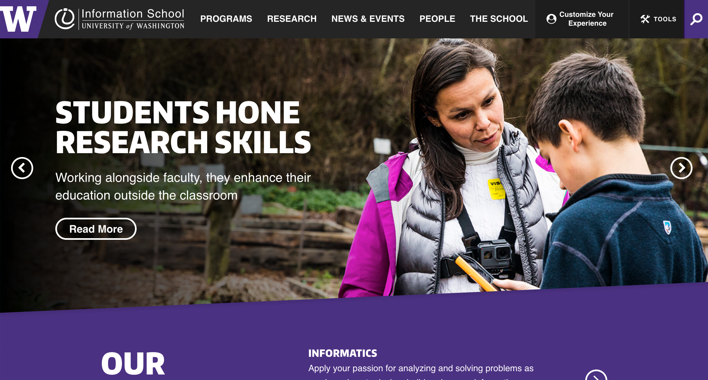
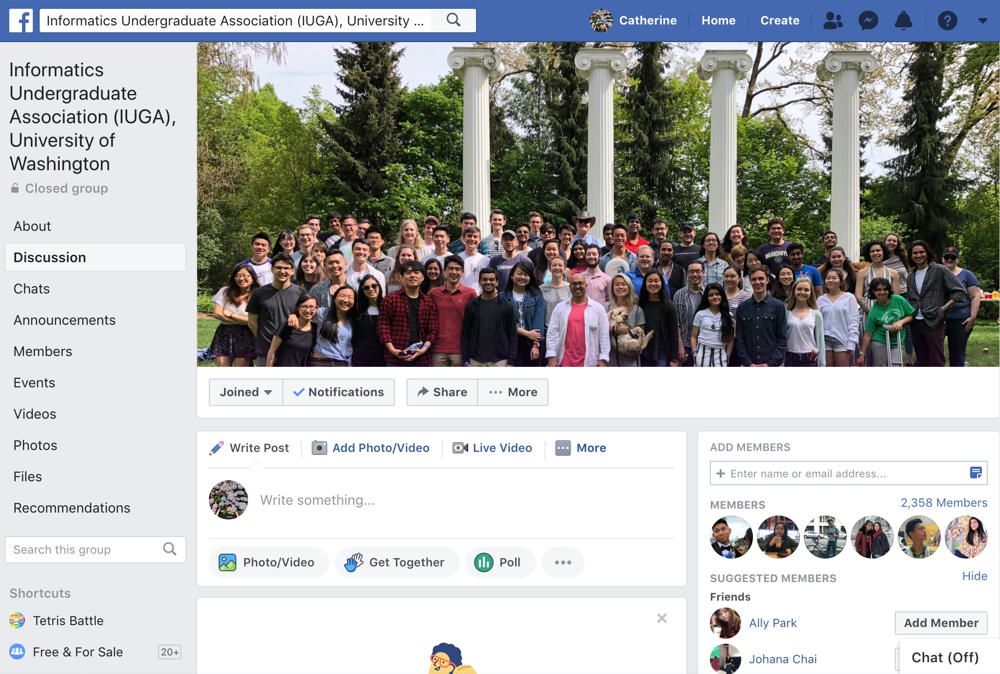
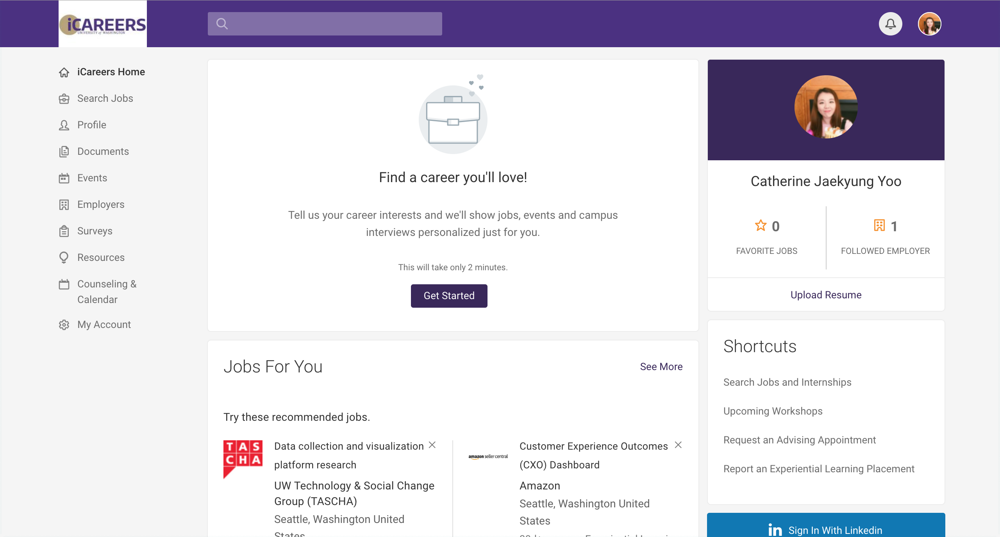

Tools: Sketch / InVision
Final project for Design Thinking course, we designed the iNTEREST app to reduce structural inequality among majors, minors, and non-majors caused by information gaps at the University of Washington. Our app is to make information currently only exclusive to Informatics students also available to students who might not be of the major, but are interested in the information that is provided by the iSchool, without increasing the workload for the iSchool faculty.Upon research, we found that there are a few existing solutions for this problem.

Contains a lot of information about academics, admissions, careers, and events offered by the iSchool. However, the events page does not contain all the information that Informatics students receive through email newsletters.
IUGA is available to any and all students who are interested in Informatics and wish to become more involved and informed about the major. Posts on the IUGA page contain social event information as well as education information from the iSchool advisors. Although informative, the page is disorganized and are more operated by students rather than by advisors. Also, social related contents typically override educational posts, resulting in students not being able to perceive certain important news.
These websites are current solutions for career, internship, and research opportunities. However, the iCareers website is exclusive to Informatics students, and many features of the page are not actually utilized. In addition, HuskyJobs page is for all majors and all types of jobs. So looking for job and research opportunities related to Informatics might be difficult to find for students who might not know much about Informatics.